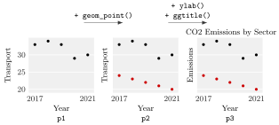

ggplot2 and the Grammar of Graphics¶
Definition¶
ggplot2 is the tidyverse package for plots. It is based on the grammar of graphics: a plot is not chosen from a list of chart types but described by its parts — the data, the aesthetic mappings that link columns to visual properties (x position, y position, colour, size, shape), and the geometric objects (geoms) that draw them — and built layer by layer with +:
ggplot(data = df) +
geom_point(aes(x = col1, y = col2)) +
labs(x = "label of x", y = "label of y", title = "Title")
ggplot() sets up the plot with its data, aes() holds the mappings, each geom_…() adds a layer, and labs() (or xlab(), ylab(), ggtitle()) changes the labels without adding a layer. A visual property written inside aes() is mapped to a column and gets a legend; written outside aes(), such as color = "red3", it is a fixed setting for the whole layer.
Interpretation¶
The grammar separates what to show from how to draw it. aes(x = Year, y = Transport) says that the year determines the horizontal position and the transport emissions the vertical position; geom_point() says that each row becomes a point. Swapping the geom for geom_line() keeps the same mapping and draws a line instead.

The figure follows Example 1. The plot p1 has one layer of black points, one per year. Adding geom_point(…, color = "red3") gives p2: the same plot with a second layer on top. The y-axis of p2 is still labelled Transport, because ggplot2 takes the axis label from the first mapping, although the axis now shows buildings too. Adding ylab() and ggtitle() gives p3, which has no new points, only new labels. Each step is an ordinary R object, so a plot can be stored, extended and printed later.
Mapping and setting are easy to confuse. In p2 the colours are settings, so ggplot2 has no variable to explain and draws no legend. To get a legend, put the information in a column and map it: with long data that has a Sector column, aes(color = Sector) colours the points by sector and adds the legend automatically, however many sectors there are. This is why long data suits ggplot2 so well. Mappings written in ggplot(df, aes(…)) are shared by all layers; those in a geom apply to that layer only.
A plot of against is the data analogue of the graph of a function, except that one value can have several points.
Two mistakes are classic. Writing aes(color = "blue") maps a constant text value: every point gets the first default colour, a salmon red, and the legend shows one entry called "blue" (Example 3). And as with the pipe, + must end a line, not start the next one (Example 4).
Key Results¶
- A ggplot is built as
ggplot(data) + layer + layer + …; each+returns a new plot object, and a stored plot is drawn when it is printed. aes()maps columns to visual properties; mapped properties get scales and a legend. Settings outsideaes()apply one value to the whole layer and produce no legend.- Mappings in
ggplot(data, aes(…))are inherited by every layer; mappings in ageom_…()apply only to that layer. labs(x = …, y = …, title = …, color = …)sets several labels at once;xlab(),ylab()andggtitle()set one each. Without them, the axes are labelled with the mapped column names.- Mapping colour to a character column gives a discrete scale with one colour per distinct value, listed alphabetically in the legend.
+has to stand at the end of a line; a line starting with+is an error.
Examples¶
The examples use a small made-up series of emissions for one country over five years.
library(tidyverse)
nl <- tibble(Year = 2017:2021,
Transport = c(33, 34, 33, 29, 30),
Buildings = c(24, 23, 22, 21, 20))
1. A scatter plot in three steps.
p1 <- ggplot(data = nl) +
geom_point(aes(x = Year, y = Transport), color = "black")
p2 <- p1 + geom_point(aes(x = Year, y = Buildings), color = "red3")
p3 <- p2 + ylab("Emissions") + ggtitle("CO2 Emissions by Sector")
p3
length(p3$layers)
#> [1] 2
p3 shows ten points: five black ones for transport, from 34 down to 29, above five red ones for buildings, falling from 24 to 20. The x-axis is labelled with the column name Year; the y-axis label and the title are the ones set by ylab() and ggtitle(). The plot has two layers: labels are not layers.
2. A legend through mapping. With the data in long format, one layer and one mapping do the work of the two layers above:
nl_long <- nl %>%
pivot_longer(Transport:Buildings, names_to = "Sector", values_to = "Emissions")
ggplot(nl_long, aes(x = Year, y = Emissions, color = Sector)) +
geom_point() +
geom_line() +
labs(y = "Emissions", title = "Yearly Emissions by Sector")
Each sector now gets its own colour (by default salmon red for Buildings and turquoise for Transport) and a legend titled Sector. Because the mapping is in ggplot(), both geom_point() and geom_line() use it, and the line layer draws one line per sector.
3. Pitfall: a constant inside aes().
p_wrong <- ggplot(nl) + geom_point(aes(x = Year, y = Transport, color = "blue"))
unique(layer_data(p_wrong)$colour)
#> [1] "#F8766D"
p_right <- ggplot(nl) + geom_point(aes(x = Year, y = Transport), color = "blue")
unique(layer_data(p_right)$colour)
#> [1] "blue"
In p_wrong the text "blue" is treated as data: a column whose only value is "blue". It is mapped to the first colour of the default scale, #F8766D (salmon red), and the plot gets a legend titled "colour" with a single entry "blue". layer_data() shows the colours that are actually drawn.
4. Pitfall: + at the start of a line.
p <- ggplot(nl)
+ geom_point(aes(x = Year, y = Transport))
#> Error in `+.gg`:
#> ! Cannot use `+` with a single argument
#> ℹ Did you accidentally put `+` on a new line?
The first line is complete, so p becomes an empty plot; the second line is a lone + applied to a layer. Moving + to the end of the first line fixes it.
Prerequisites¶
Related Concepts¶
- Choosing a Plot Type in ggplot2
- Pivoting Between Wide and Long Data
- Pipe Operator
- Graph of a Function
Sources¶
- Programming for EOR · Week 4
- Lecture 4 script, Data Wrangling with the tidyverse & Visualisation with ggplot2: Plotting with ggplot2; A step-by-step scatter plot; Plotting by group with a legend; Week 4 solutions, exercises 8 and 10
Aliases: ggplot2, ggplot(), aes(), aesthetic mapping, aesthetics, geom_point(), labs(), ggtitle(), xlab(), ylab(), grammar of graphics, layers, scatter plot in R Keywords: ggplot() + layers, aes() mapping, mapping vs setting, labels and legend
Last updated: 10 November 2026 16:43
ggplot2 and the Grammar of GraphicsChoosing a Plot Type in ggplot2TibbleCore dplyr VerbsPackagesPivoting Between Wide and Long DataPipe OperatorGraph of a Function